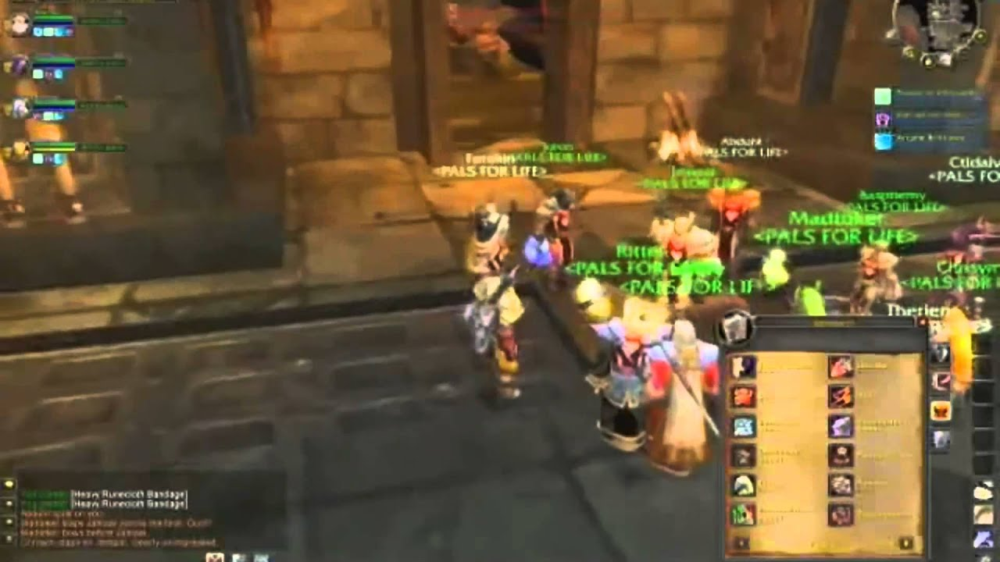
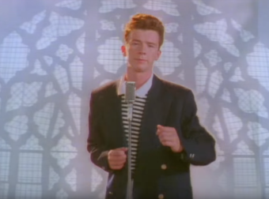
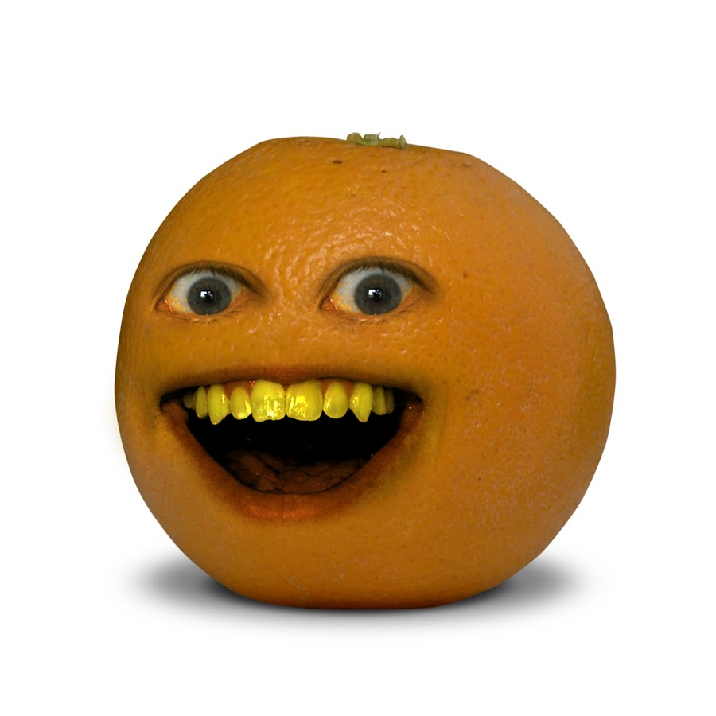

Pepe The Frog

Pepe was originally created by cartoonist Matt Furie. He designed Pepe as a green, human-like frog
and first published it in his 2005 webcomic Boy’s Club. Its popularity grew through websites
like Myspace and 4chan around 2008. Soon, different variations of the Pepe meme appeared, such as
“Sad Frog” and “Angry Pepe.”
By 2012, Sad Pepe began appearing on Tumblr, and by 2014, versions surfaced on Chinese media. Eventually, “Rare Pepes” were sold online.
By 2015, Pepe was the most retweeted meme on Twitter and ranked #6 on Daily News and Analysis’s list. However, Pepe was later used as a hate symbol, and in May 2017, Furie retired the character.
Source: Adapted from publicly available information
By 2012, Sad Pepe began appearing on Tumblr, and by 2014, versions surfaced on Chinese media. Eventually, “Rare Pepes” were sold online.
By 2015, Pepe was the most retweeted meme on Twitter and ranked #6 on Daily News and Analysis’s list. However, Pepe was later used as a hate symbol, and in May 2017, Furie retired the character.
Source: Adapted from publicly available information
Leeroy Jenkins

Leeroy Jenkins comes from a video titled Leeroy!!, released by a World of Warcraft (WoW)
guild called "Pals For Life" on the WoW video site WarcraftMovies on May 11, 2005.
The video shows a group of players making a plan for their next fight. During this
discussion, Leeroy—a member of the group—is away from his computer making a plate of chicken.
The goal of the plan is to get Leeroy a piece of armor from the in-game monsters. But after
they finalize the plan, Leeroy comes back online, says "Let’s do this!", and rushes into the
cave where the monsters are—shouting his name as a battle cry: "LEEEROYYYY JENKIIINNNSSS!"
In disbelief, one member says, “Oh my God, he just ran in.” Moments later, the rest of the team
rushes in to try and save him, but without a plan, they all die. The guild members start mocking
Leeroy, to which he replies: "At least I have chicken!"
The video became a full-blown internet meme when it was posted to the WoW forums in a thread called
"UBRS (vid) Rookery Overpowered! blue plz." The thread framed the video more seriously, claiming
that Blizzard (the company behind WoW) should make the encounter less difficult, and asked other
players for strategies to beat it—causing the clip to spread quickly.
In 2017, it was revealed that the video was staged. In 2022, Blizzard even added a Legendary card called Leeroy Jenkins to one of there card games Source: Adapted from publicly available information
guild called "Pals For Life" on the WoW video site WarcraftMovies on May 11, 2005.
The video shows a group of players making a plan for their next fight. During this
discussion, Leeroy—a member of the group—is away from his computer making a plate of chicken.
The goal of the plan is to get Leeroy a piece of armor from the in-game monsters. But after
they finalize the plan, Leeroy comes back online, says "Let’s do this!", and rushes into the
cave where the monsters are—shouting his name as a battle cry: "LEEEROYYYY JENKIIINNNSSS!"
In disbelief, one member says, “Oh my God, he just ran in.” Moments later, the rest of the team
rushes in to try and save him, but without a plan, they all die. The guild members start mocking
Leeroy, to which he replies: "At least I have chicken!"
The video became a full-blown internet meme when it was posted to the WoW forums in a thread called
"UBRS (vid) Rookery Overpowered! blue plz." The thread framed the video more seriously, claiming
that Blizzard (the company behind WoW) should make the encounter less difficult, and asked other
players for strategies to beat it—causing the clip to spread quickly.
In 2017, it was revealed that the video was staged. In 2022, Blizzard even added a Legendary card called Leeroy Jenkins to one of there card games Source: Adapted from publicly available information
Rickroll

Rickroll comes from the 1987 song Never Gonna Give You Up by Rick Astley,
released on his debut album Whenever You Need Somebody . The song hit number 1 on many charts.
An early version of “Rickrolling” started in 2006 on the 4chan imageboard through a prank called “duckrolling.” A site filter replaced the word “egg” with “duck,” and users created a meme of a duck on wheels. When people clicked misleading links, they’d see the duck image along with the phrase “You’ve been duckrolled.”
In March 2007, when the first trailer for Grand Theft Auto IV was released, Rockstar’s site crashed from heavy traffic. To prank users, a 4chan member named Scott Cotter posted a link to Never Gonna Give You Up, claiming it was the trailer. This became the first “Rickroll.”
The prank spread rapidly across 4chan, Fark, Digg, and later mainstream platforms. By April 2008, a poll revealed that 18 million U.S. adults had been Rickrolled. That same year, Rick Astley himself said he found the meme “hilarious” and chose not to capitalize on it.
The meme has remained popular ever since, and as of August 19, 2025, the music video has over 1.6 billion views on YouTube. Source: Adapted from publicly available information
An early version of “Rickrolling” started in 2006 on the 4chan imageboard through a prank called “duckrolling.” A site filter replaced the word “egg” with “duck,” and users created a meme of a duck on wheels. When people clicked misleading links, they’d see the duck image along with the phrase “You’ve been duckrolled.”
In March 2007, when the first trailer for Grand Theft Auto IV was released, Rockstar’s site crashed from heavy traffic. To prank users, a 4chan member named Scott Cotter posted a link to Never Gonna Give You Up, claiming it was the trailer. This became the first “Rickroll.”
The prank spread rapidly across 4chan, Fark, Digg, and later mainstream platforms. By April 2008, a poll revealed that 18 million U.S. adults had been Rickrolled. That same year, Rick Astley himself said he found the meme “hilarious” and chose not to capitalize on it.
The meme has remained popular ever since, and as of August 19, 2025, the music video has over 1.6 billion views on YouTube. Source: Adapted from publicly available information
Annoying Orange

Annoying Orange started as an animated comedy series on YouTube by Dane Boedigheimer in 2009.
The series follows a talking orange who lives in a kitchen with other fruits, vegetables, utensils,
and objects. Each episode usually follows a similar format: Orange annoys the others by cracking jokes,
calling them names, burping, or just “breaking wind.” Though he usually means well, at the end of most episodes
one character meets a gruesome death—often by a chef’s knife. Orange usually tries to warn them by shouting
the weapon’s name (“Knife!”).
In newer episodes, the format sometimes changes, but Orange is always annoying. There are six main recurring characters besides Orange: Pear, Passion Fruit, Marshmallow, Midget Apple, and Grandpa Lemon. Other characters like Squash and Dr. Bananas also appear throughout the series.
The series became increasingly popular, spawning memes, remixes, and even games. As of August 20th, 2025, the Annoying Orange YouTube channel has amassed over 10 million subscribers.
Source: Adapted from publicly available information
In newer episodes, the format sometimes changes, but Orange is always annoying. There are six main recurring characters besides Orange: Pear, Passion Fruit, Marshmallow, Midget Apple, and Grandpa Lemon. Other characters like Squash and Dr. Bananas also appear throughout the series.
The series became increasingly popular, spawning memes, remixes, and even games. As of August 20th, 2025, the Annoying Orange YouTube channel has amassed over 10 million subscribers.
Source: Adapted from publicly available information